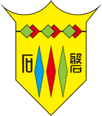

基本資料
個人經歷
專業技能
自我期許
生活紀錄
譚曾瑄
電話:
0908219836
Email:
eva0910481836@gmail.com
地址:
新竹市安和街2巷32號
這裡是曾瑄的介紹
集聚中多才華於一身的我，
目前就讀中原大學資管系，
喜歡挑戰自我，在挫敗中學習，
經過了一波三折終於來到了中原大學資管系。

2014-201
磐石高中
就讀私立磐石中學資處科
高中三年除了學習到許多電腦及管理知識，還擔任許久的班長時長大約兩年，這些寶貴的經驗讓我收穫許多，在未來的路上也是經得住大風大浪。
2017-2018
中華大學
大一就讀中華大學資管系
在中華的這一年，我經歷過了許多，該玩的玩，該瘋的瘋，參加了全校新生的手環比賽拿了獎金，也和學校一起去了香港理工大學參訪。
2018
銘傳大學
大二上就讀銘傳大學資管系
經過了一些故事，我非常及時的做了轉學的決定，當時也報了中原大學，但是沒上，所以就去了銘傳大學，而在銘傳大學的半年也感受到了前所未有的壓力。但我還是轉學了...
2019-2021
中原大學
大二下中原大學資管系
經過了一波三折我終於來到了中原大學，隨然課業壓力依舊很重，也在暑假進行暑修，但是在這裡我認識了許多朋友，過得非常充實。也希望在未來，我能變得更好。
40%
Python
30%
R STUDIO
60%
JAVA
70%
HTML5
80%
CSS
自我期許
退後的理由有很多但前進的理由只有一個